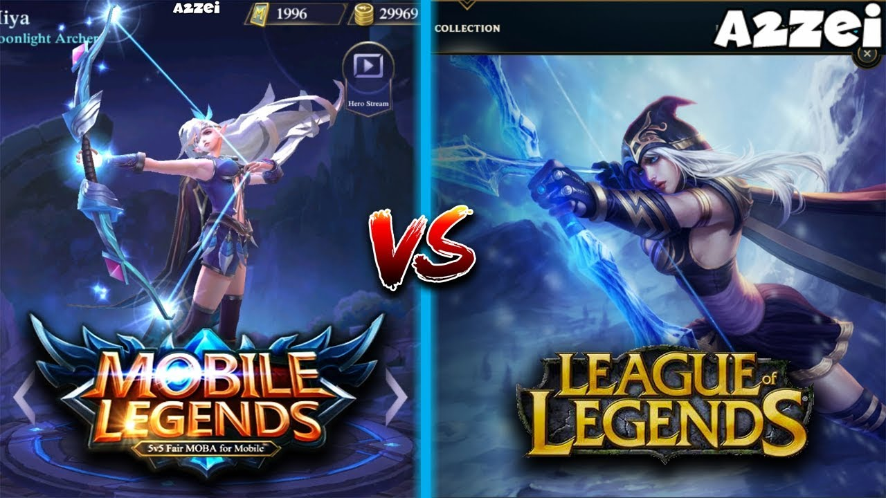

Created by: Thomas Jin
Period: A
If you are looking for a MOBA game that has realistic graphics and complex gameplay, then LoL is the right choice. However, if you are looking for a MOBA game that is more accessible and can be played anywhere, then ML is a better choice. League of Legends: Wild Rift and Mobile Legends Bang Bang are considered the most renowned MOBA games on mobile platforms. Both have successfully incorporated the genre's PC features in their corresponding mobile versions. Their popularity is undeniable, which inevitably sparked a heated discussion about which game is superior. The outcome of a Mobile Legends Bang Bang match is dependent on individual brilliance, which goes against the concept of MOBA. Most matches are carried by a single player because the title unnaturally buffs the hero after a kill streak or two in the early game. Besides, it disrupts opportunities for opponents to fight back as the champion then possesses excessive damage-dealing capabilities. Many fans believe that League of Legends: Wild Rift inspired Mobile Legends Bang Bang.latter's maps, lanes, champion abilities, and other elements closely resemble the former. Most heroes in Mobile Legends have three abilities and a passive ability. Meanwhile, League of Legends: Wild Rift's champions have four abilities and a passive ability. This dramatically allows a player in Riot Games' title to have more options and combos to execute in a match. Additionally, League of Legends: Wild Rift provides a better beginner-oriented mechanism than Mobile Legends. The basic instructions and tutorials in LoL: Wild Rift are comprehensive and clarified, which Mobile Legends lacks. Due to this reason, it holds the number four slot here.
